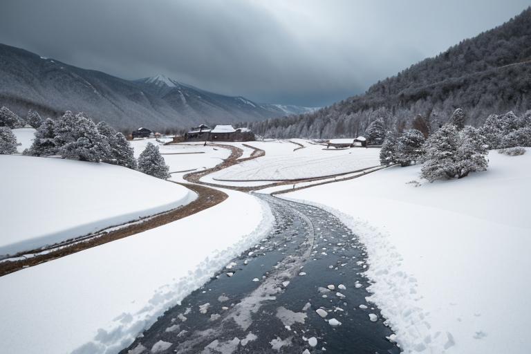
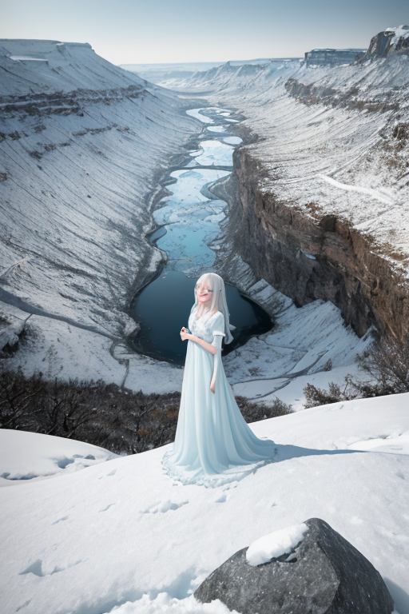
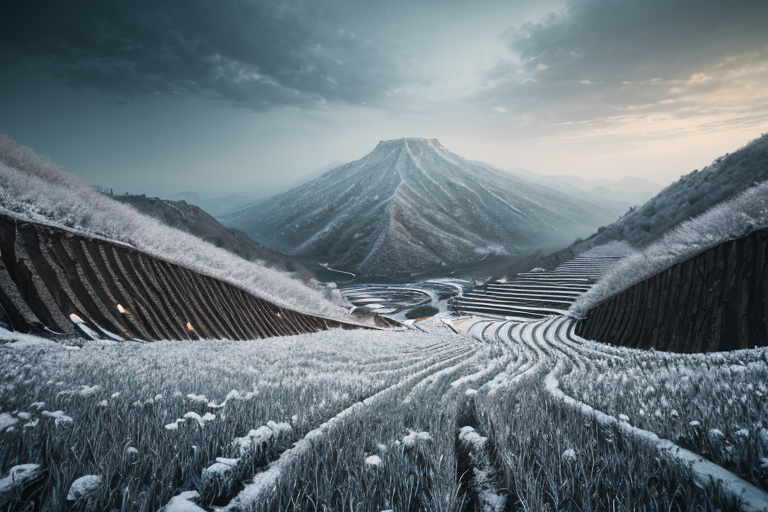
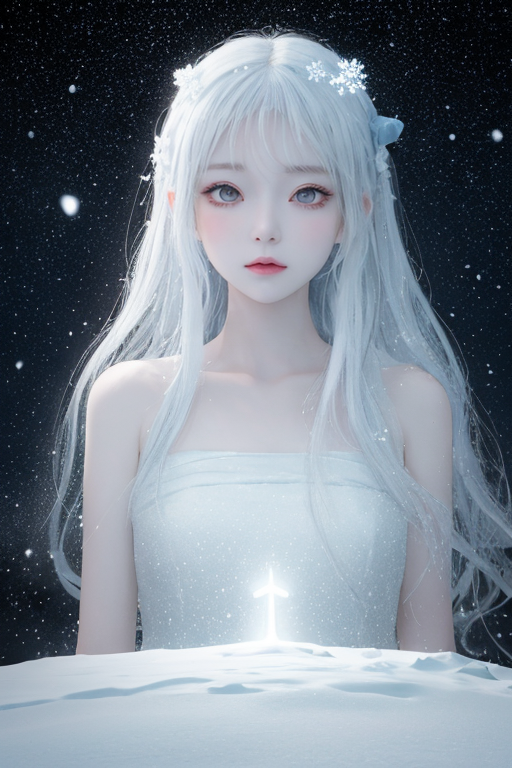
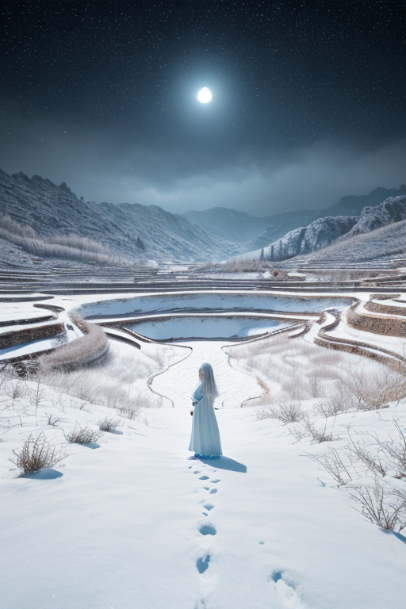

第一章 現実の新潟
あなたはまだ気づいていない。この土地にも、王がいることを。
星峠の棚田は、冬の訪れと共に白い余白へと還る。水を張った鏡のような田は、やがて厚い雪に覆われ、あらゆる輪郭を失う。ここはニイガリア・アルバ、余白と豪雪の王国だ。その中心で、王は静かに立っていた。白と藍の衣をまとったその姿は、吹きすさぶ雪の中ですら、かすかに輪郭を浮かび上がらせるだけだった。彼の眼前には、歪みの列島を流れる巨大なエネルギーの脈、いわゆる「歪みの帯」が、地図のように透けて見えている。新潟の下を通るそれは、特に太く、重く、しかし表面は異様なまでに静かだった。雪のように積もった「封印」によって、無理やり鎮静化されているかのようだ。
王の傍らには、小さな光が二つ。主席妖精アルバナは、雪片そのもののように冷たい目で歪みの帯を見つめ、過剰な圧力が一点に集中しないよう、絶え間なく微調整を続けていた。もう一つの光、コシヒカリスは、棚田の輪郭をなぞるように漂い、地中深くの豊穣を司る波長を安定させている。すべては沈黙裡に行われる。ここには、英雄的な救済も、劇的な奇跡もない。ただ、雪が降り積もるように、災いの芽を分散させ、遅延させる、果てしない調整の日々がある。
王は、自らが施した雪の封印を見つめながら、ひとつだけの問いを、繰り返し思い浮かべる。
この余白に、いったい何を書くべきなのか。

第二章 歪みの兆候
清津峡の深いV字谷は、夏でも冷気が漂う。岩肌に張り付いた雪の名残が、青黒い御影石を縁取る。ここは、王国の結界が最も強固に張り巡らされた地点の一つだ。しかし、アルバナが峡谷の中央に立ち、掌をかざすと、微かな違和感が伝わってきた。雪の結晶の配列が、ごくわずか、乱れている。地殻の深部から伝わる「歪み」の振動が、ここ数週間、確かに増幅している。それは、豪雪地帯を守る雪の封印そのものが、長い年月と増大する地圧に耐えかね、微細な亀裂を生じ始めている証だった。
王は、越後湯沢の温泉街を見下ろす高台に立っていた。人々の営みは、いつもと変わらぬ平穏そのものに見える。だが、彼の目には、地面の下を流れるエネルギーの「流れ」が、ほんのりと濁り、淀み始めているのが見えた。封印が弱まれば、調整の精度は落ちる。分散できたはずの雪の重みが一点に集中し、あるいは、遅延させていた小さな地滑りが、ほんの数秒早まるかもしれない。
「余白が、侵食され始めている」
王の低い呟きに、アルバナは無言でうなずいた。増大する圧力。劣化する封印。ただ耐え、分散させるだけの日々に、初めて、限界の影が差した。彼は、自らの掌を見つめた。何も書かれていない、真っ白な掌。この余白に、いったい何を書けば、この侵食を止められるのか。

第三章 王の葛藤
星峠の棚田の水面は、鉛色の空を完璧に写していた。王はその余白のような水面を見下ろしながら、問いを繰り返した。余白に何を書くか。書かなければ、増大する歪みは雪封印を破り、長く溜め込んだ圧力が一気に解放される。書けば、彼の本質である「待つこと」「受け止めること」が変質する。それは調整者の越権行為かもしれない。
佐渡金山の坑道のように深く静かな葛藤が、王の内側を穿った。上杉謙信が戦場で「義」を掲げたように、彼にも守るべき律がある。災害を消すことなく、その衝撃を分散させ、遅延させること。それがこの列島に派遣された王の、絶対的なルールだった。
しかし、コシヒカリスの稲穂が伝える地中の軋みは、かつてない緊迫を帯びている。ただ耐え、分散させるだけの余白が、もはや存在しないのではないか。彼は、自らの真っ白な掌を、ゆっくりと握りしめた。何かを「書く」という行為が、この静謐な王国を、そして彼自身を、決定的に変えてしまう予感がした。

第四章 妖精との対話
星峠の棚田の水面に、冬の星座が凍りついていた。王の傍らに、雪の精霊アルバナが静かに顕現する。その声は、降り積もる雪のように柔らかく、重かった。
「我が王よ。この雪は、単なる気象ではありません。古より続く『封印』です」
アルバナは、佐渡金山の坑道が地底深く抱える歪み、上杉謙信が戦いで撒いた無数の“軋み”の種を指した。それらは長い歳月、この土地の豪雪によって静かに押さえ込まれてきた。雪は余白であり、同時に蓋であった。
「しかし、圧が限界に近づいています。ただ耐え、余白を保つだけでは、いつか雪解けと共に全てが溢れ出すでしょう」
王は問うた。「では、余白に何を書けというのか」
アルバナは深く頭を垂れた。「それは、王にお決めいただくこと。『書く』とは、この静謐な均衡を自らの手で破る行為。それは…感情を持つに至った我が王にのみ、許されし危険な特権です」
雪原は深い沈黙に包まれた。書くべきか、書かざるべきか。その選択が、王国の運命を、そして感情という名の新たな歪みを生む。

第五章「微調整と余韻」
星峠の棚田に、最後の雪が微かに融けかけていた。ニイガリア・アルバは、自らの掌を見つめた。そこには、藍で描かれた小さな円、余白の紋章が浮かんでいた。書くべきか。感情という名の、危険で甘美な歪みを、この静謐な均衡に刻み込むべきか。
彼は目を閉じた。佐渡金山の深い闇、清津峡の凍てついた静寂、越後平野を覆う雪の重み。それら全てが、書かれることを、書かれるべきではないことを、同時に訴えているように感じた。
王は紋章に指を触れた。書く。だが、その筆跡は、破壊ではなく修復のものとした。感情の奔流を堰き止め、雪解けの洪水を防ぐ「微調整」を。彼の内に芽生えた「忍耐」という感情そのものをインクに変え、封印の亀裂を静かに埋めていく筆致。それは、新たな物語の始まりではなく、古い均衡の延長だった。
雪原は以前よりも、ほんの少しだけ深い青を帯びた。何かが失われ、何かが保たれた。アルバナが俯く横で、王は融雪の棚田に、かすかな、しかし確かな温もりを感じていた。問いへの答えは、まだ余白のままでいい。今はただ、この静かな雪解けを見守ろう。
あなたの町にも、王がいる。